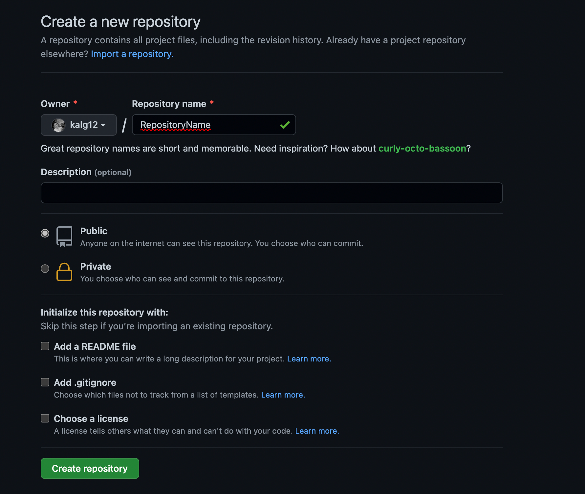

Inicializar un proyecto
Para iniciar tu primer proyecto en Git, en la carpeta donde tendrás tu proyecto, ejecuta el siguiente comando.
git init
Crea un repositorio en Github
Crea un nuevo repositorio en GitHub, asigna el nombre deseado. Para tu repositorio puedes elegir: público o privado.

Configuración rápida
Una vez dado clic en "Create repository" verás la configuración rápida (Quick setup) de GitHub. Tendrás 3 opciones para poder crear tu repositorio.

Añadiendo archivos
Para que git empiece a seguir los cambios de este fichero vamos ejecutar
git add .
Guardando cambios
El comando git commit guardará todos los cambio hechos en la zona de montaje o área de preparación (staging area), junto con una breve descripción del usuario, en un "commit" al repositorio local.
git commit -m "Tu comentario aquí"
El paso "final"
Git push se suele usar para publicar y cargar cambios locales a un repositorio central. Después de modificar el repositorio local, se ejecuta un comando push para compartir las modificaciones con miembros remotos del equipo.
git push
Verifica el estado de tu repositorio
Para conocer en qué área de trabajo se encuentran nuestros archivos utiliza el comando
git status